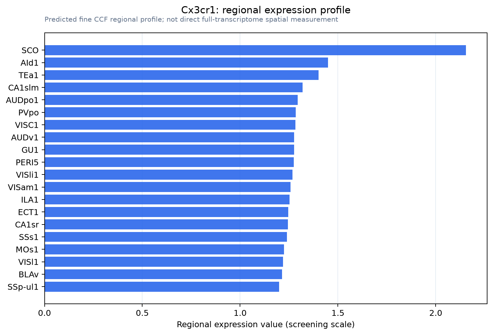

Cx3cr1
CX3C chemokine receptor 1 (C-X3-C CKR-1) (CX3CR1) (mCX3CR1) (Fractalkine receptor)
Spatial tier: RESTRICTED · Class: GPCR · Top region: SCO (Subcommissural organ) · Positive regions: 19/554
41.5Discovery Score
37.7Targetability Score
CEvidence grade C
What this means: Cx3cr1: fine CCF profile is restricted toward SCO (top regions: SCO, AId1, TEa1, CA1slm, AUDpo1; 19 positive regions); direct spatial validation is still required.
Direct spatial evidence
MERFISH REGION LOCATOR

Regional expression figure

Predicted WMB × fine-CCF profile; not direct full-transcriptome spatial measurement.
Spatial profile
Evidence and specificity
- Evidence status
- PREDICTED_FINE
- Direct sources
- None; predicted localization only
- Exclusive threshold
- 12 positive regions out of 554
- Spatial specificity
- 0.270
- Top-region fraction
- 0.063
- Filter status
- PASS
Interpretation limits
- Cell-type-to-region projection is imputed expression, not direct spatial measurement.
- Adult reference atlases do not establish stability across age, sex, strain, state, or disease.
- Transcript abundance does not guarantee protein abundance or genetic-tool performance.